이 전략의 진입 조건
- 30주선 크로스오버 — 주봉 종가가 30주 이동평균을 그 주에 처음 넘을 것(직전 주까지는 아래에 있어야 하며, 이미 위에 있던 종목은 신호가 아닙니다)
- 거래량 급증 — 그 주의 최고 일별 거래량이 직전 20거래일 평균의 2배 이상일 것 (원서 조건 그대로: "일주일 동안의 최고 거래량이 지난달 평균 거래량보다 최소 2배")
- 맨스필드 RS ≥ 0 — 지수 대비 상대강도가 자기 52주 이동평균 위에 있을 것 (코스피 종목은 코스피, 코스닥은 코스닥, 미국은 S&P500 기준)
자세히 — 한계와 주의사항
세 조건을 모두 만족해야 신호가 납니다. 순위는 거래량 배수 내림차순이고 상위 30종목만 표시합니다.
RS 게이트에는 예외가 있습니다. RS를 계산할 수 없으면(상장 후 52주 미만 등) 게이트를 걸지 않고 통과시킵니다 — 현재 신호의 약 6%입니다. 2026-09-06 이전에는 이 값이 35%였습니다(백테스트용 지수를 8년치만 받아와 앞 3~4년의 RS가 통째로 비어 있었습니다).
성과 수치를 근거로 삼지 마세요. 진입 조건을 전혀 바꾸지 않고 백테스트 기간만 ±7% 흔들어도 10년 CAGR이 7.75%~21.88%로 움직입니다(폭 14.1%p). 조건을 바꿔서 얻는 차이(11.4%p)보다 큽니다. 지금 조합은 '최선이라서'가 아니라 '바꿀 근거가 없어서' 유지하는 것입니다 — reports/weinstein_entry_rules_decision_log.md §5⑫.
이미 기각된 방향: 베이스 저항선 돌파, 원서②(3~4주 누적 거래량), 30주선 비하락, 주간 총거래량 기준. 근거는 같은 문서 §4에 있습니다.
상품 종합 도매업
업종 참고: RS 평균 54/99(업종 중 상위 39%) · 오늘 신호 1건 · 업종 평균이 코스피 대비 -23.3%p(126일), 종목별 편차 ±13%p
🧪 자체 섹터 분류(실험적, 참고용): 1차 철강 제조업 (송원산업·KG스틸 등 17종목)
섹터 내 RS 순위: 3/17위 (RS 68/99)
섹터 1~3위: 송원산업(87), KG스틸(70), GS글로벌(68)
※ 자체 상관관계 계산(최근 1년) — 검증 시 기준업종 11개 중 8개 정확. 주 단위로 구성종목이 일부 바뀔 수 있음(주간 일치도 실측 0.53)
종가 3,205 · 거래대금 32억
거래량비 3.2x맨스필드RS +0.1
손절 2,981 | 목표 3,878 | 수량 3,120주
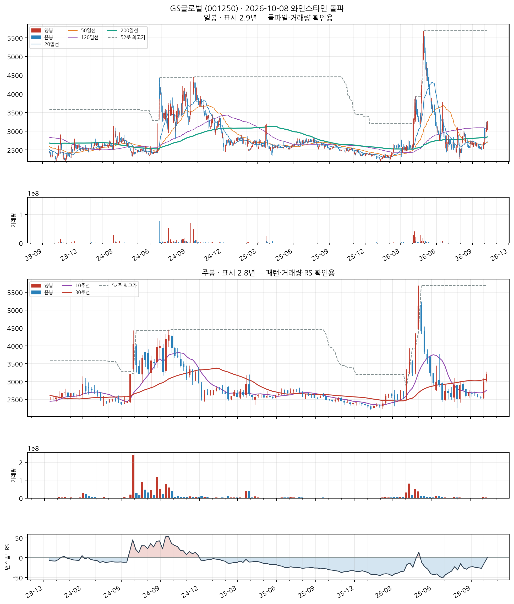
📐 차트 패턴: 약한 유사 — 이중바닥 돌파 확인 확신 낮음 판정 기준(PDF)
두 저점(2,480/2,515) 뒤 중간 고점 2,900를 종가로 넘었다.
가장 강한 반증 선행 추세: 선행 추세가 상승(+108.1%) — 상승 중 눌림일 수 있어 반전형 전제가 없다
경쟁 후보·더 단순한 설명 컵위드핸들(형성 중·확신 낮음) / 더 단순한 설명: 선행 하락이 없어 반전형이 아니라 상승 추세 중 눌림(조정)일 수 있다
측정표 (주봉 종가 기준, 판정일 2026-10-08 이후 데이터 미사용)
조건별 판정
- 미충족 선행 추세 — 선행 추세가 상승(+108.1%) — 상승 중 눌림일 수 있어 반전형 전제가 없다
- 충족 두 저점 일치 — 저점 차이 1.4% ≤ 6%
- 충족 중간 반등 — 중간 반등 16.9% ≥ 8%
- 충족 기간 — 베이스 22주 ≥ 7주
- 미충족 깊이 — 베이스 깊이 51.5% — 50% 초과
- 충족 저점2 매도 약화 — 저점2 부근 거래량 = 저점1 부근의 0.62배
- 충족 최근성 — 돌파 주(2026-10-02)가 0주 전
- 충족 넥라인 돌파 — 2026-10-02 주 종가 2,975 > 확인선
- 충족 돌파 거래량 — 돌파 주 거래량 = 직전 10주 평균의 2.21배
추가로 필요한 데이터 장중 고저 기준 깊이(여기 수치는 주봉 종가 기준) · 이번 주 완결 주봉(2026-10-09 라벨) — 미완결이라 판정에서 제외
패턴만으로 매수 추천이나 목표 달성 확률을 만들지 않습니다. 수치 기준은 잠정치이며 라벨 데이터로 검증되지 않았습니다.
일반 및 생활 숙박시설 운영업
업종 참고: RS 평균 데이터 부족 · 오늘 신호 1건
🧪 자체 섹터 분류(실험적, 참고용): 현대백화점·롯데쇼핑 등 10종목 (업종 혼재)
섹터 내 RS 순위: 4/10위 (RS 56/99)
섹터 1~3위: 현대백화점(76), 롯데쇼핑(63), 신세계(56)
※ 자체 상관관계 계산(최근 1년) — 검증 시 기준업종 11개 중 8개 정확. 주 단위로 구성종목이 일부 바뀔 수 있음(주간 일치도 실측 0.53)
종가 11,820 · 거래대금 67억
거래량비 2.5x맨스필드RS +4.9
손절 10,993 | 목표 14,302 | 수량 846주
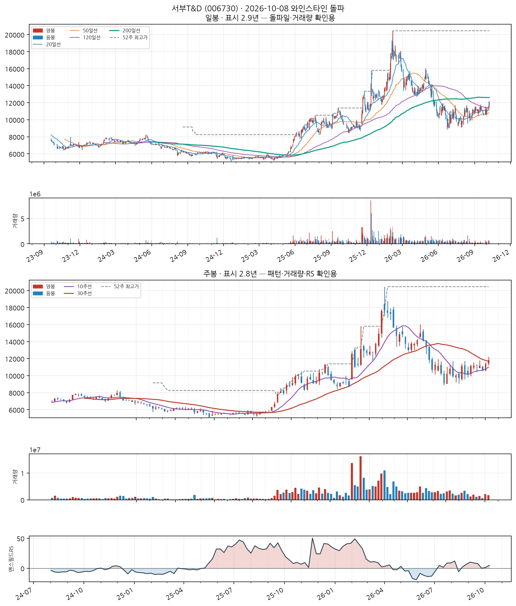
📐 차트 패턴 판정: 후보 없음 후보 없음 판정 기준(PDF)
세 패턴 모두 필수 조건을 채운 후보가 없다(가장 가까운 컵위드핸들 후보: 림 대칭: 좌우 림 차이 23.8% — 오른쪽 림이 낮음, 20% 초과).
가장 강한 반증 컵위드핸들: 림 대칭: 좌우 림 차이 23.8% — 오른쪽 림이 낮음, 20% 초과; 이중바닥: 두 저점 일치: 저점 차이 30.2% — 같은 지지대로 보기 어려움(10% 초과)
경쟁 후보·더 단순한 설명 더 단순한 설명: 최근 26주 하락 추세 지속(-12.5%) — 베이스 없음
추가로 필요한 데이터 장중 고저 기준 깊이(여기 수치는 주봉 종가 기준) · 이번 주 완결 주봉(2026-10-09 라벨) — 미완결이라 판정에서 제외
패턴만으로 매수 추천이나 목표 달성 확률을 만들지 않습니다. 수치 기준은 잠정치이며 라벨 데이터로 검증되지 않았습니다.
의료용품 및 기타 의약 관련제품 제조업
업종 참고: RS 평균 44/99(업종 중 상위 62%) · 오늘 신호 1건 · 업종 평균이 코스닥 대비 +1.9%p(126일), 종목별 편차 ±30%p
🧪 자체 섹터 분류(실험적, 참고용): 의료용품 및 기타 의약 관련제품 제조업 (HLB생명과학·HLB테라퓨틱스 등 5종목)
섹터 내 RS 순위: 5/5위 (RS 32/99)
섹터 1~3위: HLB생명과학(73), HLB테라퓨틱스(54), HLB이노베이션(43)
※ 자체 상관관계 계산(최근 1년) — 검증 시 기준업종 11개 중 8개 정확. 주 단위로 구성종목이 일부 바뀔 수 있음(주간 일치도 실측 0.53)
종가 46,000 · 거래대금 426억
거래량비 5.4x맨스필드RS +6.9
손절 42,780 | 목표 55,660 | 수량 217주
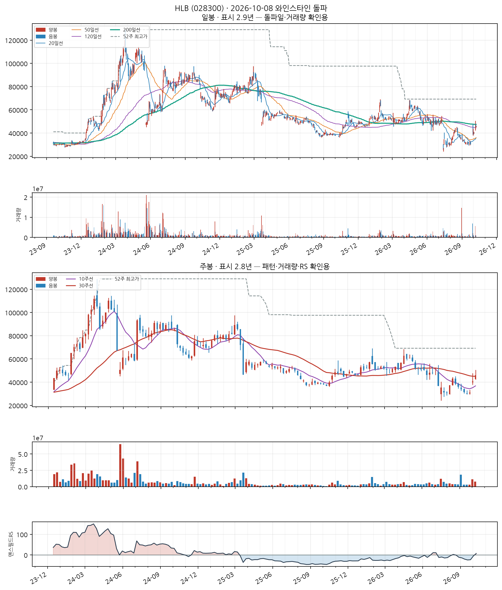
📐 차트 패턴: 약한 유사 — 이중바닥 형태 완성·미돌파 확신 낮음 판정 기준(PDF)
W 형태는 있으나 중간 고점 43,150를 아직 넘지 못했다.
가장 강한 반증 선행 추세: 선행 추세가 상승(+57.5%) — 상승 중 눌림일 수 있어 반전형 전제가 없다
경쟁 후보·더 단순한 설명 더 단순한 설명: 선행 하락이 없어 반전형이 아니라 상승 추세 중 눌림(조정)일 수 있다
측정표 (주봉 종가 기준, 판정일 2026-10-08 이후 데이터 미사용)
조건별 판정
- 미충족 선행 추세 — 선행 추세가 상승(+57.5%) — 상승 중 눌림일 수 있어 반전형 전제가 없다
- 충족 두 저점 일치 — 저점 차이 1.8% ≤ 6% · 두 번째 저점이 첫 저점을 언더컷(IBD 선호)
- 부분충족 중간 반등 — 중간 반등 43.6% — 30%를 넘어 W가 아니라 독립된 두 파동일 수 있음
- 충족 기간 — 베이스 24주 ≥ 7주
- 미충족 깊이 — 베이스 깊이 52.1% — 50% 초과
- 충족 저점2 매도 약화 — 저점2 부근 거래량 = 저점1 부근의 0.54배
- 충족 최근성 — 마지막 구조 피벗(2026-09-18)이 2주 전
- 미충족 넥라인 돌파 — 종가가 아직 확인선 위로 안 올라옴(-5.8%)
- 판정불가 돌파 거래량 — 돌파 전
추가로 필요한 데이터 장중 고저 기준 깊이(여기 수치는 주봉 종가 기준) · 이번 주 완결 주봉(2026-10-09 라벨) — 미완결이라 판정에서 제외
패턴만으로 매수 추천이나 목표 달성 확률을 만들지 않습니다. 수치 기준은 잠정치이며 라벨 데이터로 검증되지 않았습니다.
자연과학 및 공학 연구개발업
업종 참고: RS 평균 17/99(업종 중 상위 94%) · 오늘 신호 2건 · 업종 평균이 코스닥 대비 -21.9%p(126일), 종목별 편차 ±18%p
🧪 자체 섹터 분류(실험적, 참고용): 의료용품 및 기타 의약 관련제품 제조업 (HLB생명과학·HLB테라퓨틱스 등 5종목)
섹터 내 RS 순위: 4/5위 (RS 35/99)
섹터 1~3위: HLB생명과학(73), HLB테라퓨틱스(54), HLB이노베이션(43)
※ 자체 상관관계 계산(최근 1년) — 검증 시 기준업종 11개 중 8개 정확. 주 단위로 구성종목이 일부 바뀔 수 있음(주간 일치도 실측 0.53)
종가 12,960 · 거래대금 872억
거래량비 8.5x맨스필드RS +13.4
손절 12,053 | 목표 15,682 | 수량 771주
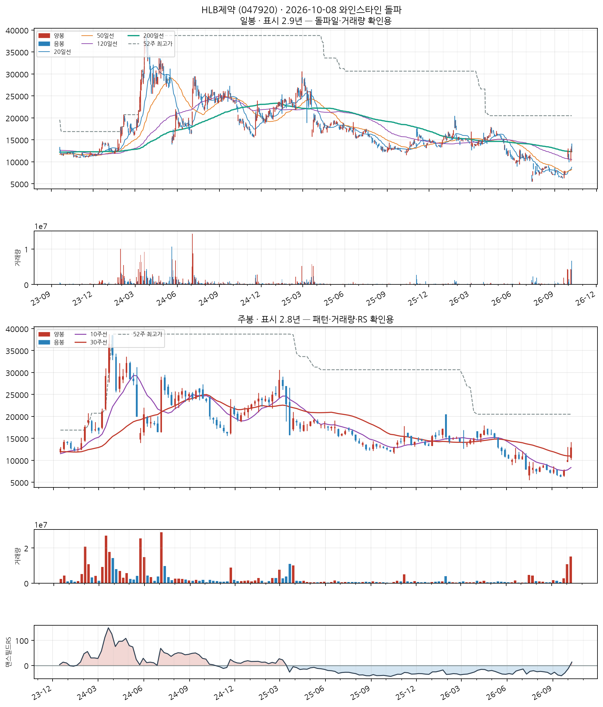
📐 차트 패턴 판정: 후보 없음 후보 없음 판정 기준(PDF)
세 패턴 모두 필수 조건을 채운 후보가 없다(가장 가까운 컵위드핸들 후보: 핸들: 핸들 저점 10,099가 컵 중간값 15,522 아래 — 핸들이 아니라 컵 재하락).
가장 강한 반증 컵위드핸들: 핸들: 핸들 저점 10,099가 컵 중간값 15,522 아래 — 핸들이 아니라 컵 재하락; 이중바닥: 두 저점 일치: 저점 차이 54.4% — 같은 지지대로 보기 어려움(10% 초과)
경쟁 후보·더 단순한 설명 더 단순한 설명: 최근 26주 하락 추세 지속(-33.7%) — 베이스 없음
추가로 필요한 데이터 장중 고저 기준 깊이(여기 수치는 주봉 종가 기준) · 이번 주 완결 주봉(2026-10-09 라벨) — 미완결이라 판정에서 제외
패턴만으로 매수 추천이나 목표 달성 확률을 만들지 않습니다. 수치 기준은 잠정치이며 라벨 데이터로 검증되지 않았습니다.
한국정보인증 (053300)
신규
KOSDAQ
소프트웨어 개발 및 공급업
업종 참고: RS 평균 46/99(업종 중 상위 59%) · 오늘 신호 3건 · 업종 평균이 코스닥 대비 +8.8%p(126일), 종목별 편차 ±34%p
🧪 자체 섹터 분류(실험적, 참고용): 핑거·슈프리마 등 16종목 (업종 혼재)
섹터 내 RS 순위: 5/16위 (RS 50/99)
섹터 1~3위: 핑거(89), 슈프리마(85), 쿠콘(64)
※ 자체 상관관계 계산(최근 1년) — 검증 시 기준업종 11개 중 8개 정확. 주 단위로 구성종목이 일부 바뀔 수 있음(주간 일치도 실측 0.53)
종가 5,260 · 거래대금 10억
거래량비 2.6x맨스필드RS +0.1
손절 4,892 | 목표 6,365 | 수량 1,901주
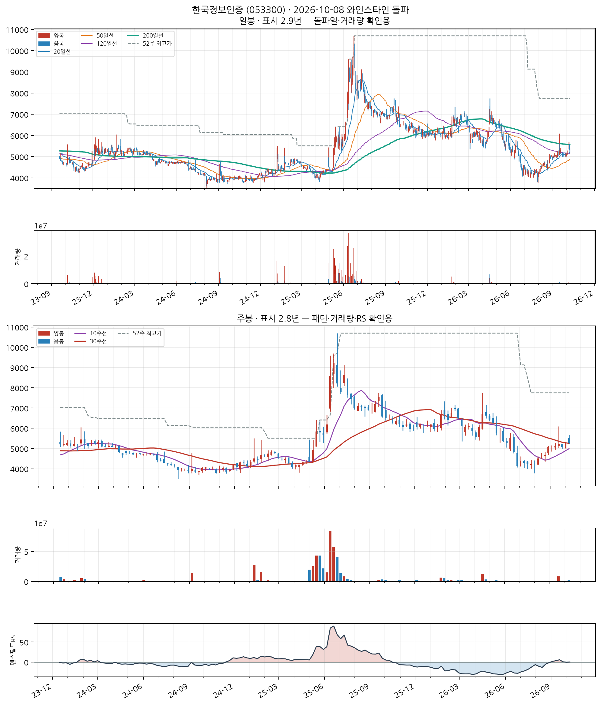
📐 차트 패턴 판정: 후보 없음 후보 없음 판정 기준(PDF)
세 패턴 모두 필수 조건을 채운 후보가 없다(가장 가까운 컵위드핸들 후보: 림 대칭: 좌우 림 차이 21.2% — 오른쪽 림이 낮음, 20% 초과).
가장 강한 반증 컵위드핸들: 림 대칭: 좌우 림 차이 21.2% — 오른쪽 림이 낮음, 20% 초과; 이중바닥: 두 저점 일치: 저점 차이 25.3% — 같은 지지대로 보기 어려움(10% 초과)
경쟁 후보·더 단순한 설명 더 단순한 설명: 최근 26주 하락 추세 지속(-5.0%) — 베이스 없음
추가로 필요한 데이터 장중 고저 기준 깊이(여기 수치는 주봉 종가 기준) · 이번 주 완결 주봉(2026-10-09 라벨) — 미완결이라 판정에서 제외
패턴만으로 매수 추천이나 목표 달성 확률을 만들지 않습니다. 수치 기준은 잠정치이며 라벨 데이터로 검증되지 않았습니다.
의약품 제조업
업종 참고: RS 평균 40/99(업종 중 상위 70%) · 오늘 신호 4건 · 업종 평균이 코스피 대비 -33.4%p(126일), 종목별 편차 ±19%p
🧪 자체 섹터 분류(실험적, 참고용): 피노·DI동일 등 11종목 (업종 혼재)
섹터 내 RS 순위: 4/11위 (RS 72/99)
섹터 1~3위: 피노(88), DI동일(85), 옵티코어(73)
※ 자체 상관관계 계산(최근 1년) — 검증 시 기준업종 11개 중 8개 정확. 주 단위로 구성종목이 일부 바뀔 수 있음(주간 일치도 실측 0.53)
종가 13,960 · 거래대금 105억
거래량비 12.9x맨스필드RS +9.4
손절 12,983 | 목표 16,892 | 수량 716주
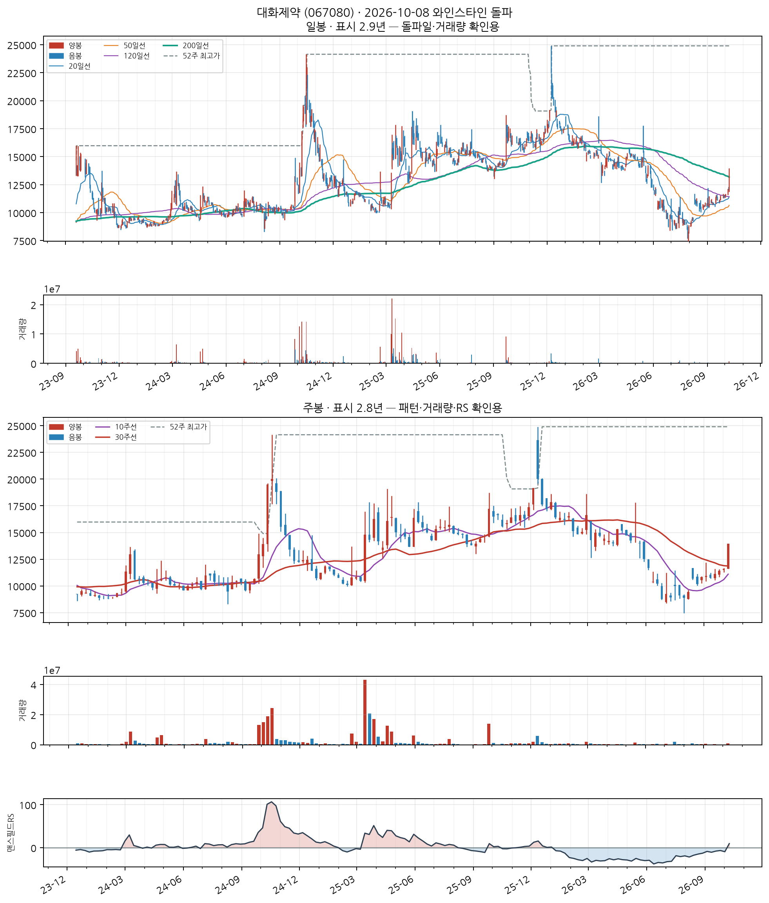
📐 차트 패턴 판정: 후보 없음 후보 없음 판정 기준(PDF)
세 패턴 모두 필수 조건을 채운 후보가 없다(가장 가까운 컵위드핸들 후보: 림 대칭: 좌우 림 차이 30.2% — 오른쪽 림이 낮음, 20% 초과).
가장 강한 반증 컵위드핸들: 림 대칭: 좌우 림 차이 30.2% — 오른쪽 림이 낮음, 20% 초과; 이중바닥: 두 저점 일치: 저점 차이 43.7% — 같은 지지대로 보기 어려움(10% 초과)
경쟁 후보·더 단순한 설명 더 단순한 설명: 최근 26주 하락 추세 지속(-18.2%) — 베이스 없음
추가로 필요한 데이터 장중 고저 기준 깊이(여기 수치는 주봉 종가 기준) · 이번 주 완결 주봉(2026-10-09 라벨) — 미완결이라 판정에서 제외
패턴만으로 매수 추천이나 목표 달성 확률을 만들지 않습니다. 수치 기준은 잠정치이며 라벨 데이터로 검증되지 않았습니다.
대주전자재료 (078600)
신규
KOSDAQ
전자부품 제조업
업종 참고: RS 평균 62/99(업종 중 상위 13%) · 오늘 신호 9건 · 업종 평균이 코스닥 대비 +32.2%p(126일), 종목별 편차 ±53%p
🧪 자체 섹터 분류(실험적, 참고용): 일차전지 및 이차전지 제조업 (삼성SDI·상신이디피 등 21종목)
섹터 내 RS 순위: 4/21위 (RS 72/99)
섹터 1~3위: 삼성SDI(87), 상신이디피(87), LG에너지솔루션(75)
※ 자체 상관관계 계산(최근 1년) — 검증 시 기준업종 11개 중 8개 정확. 주 단위로 구성종목이 일부 바뀔 수 있음(주간 일치도 실측 0.53)
종가 114,900 · 거래대금 381억
거래량비 2.5x맨스필드RS +29.6
손절 106,857 | 목표 139,029 | 수량 87주
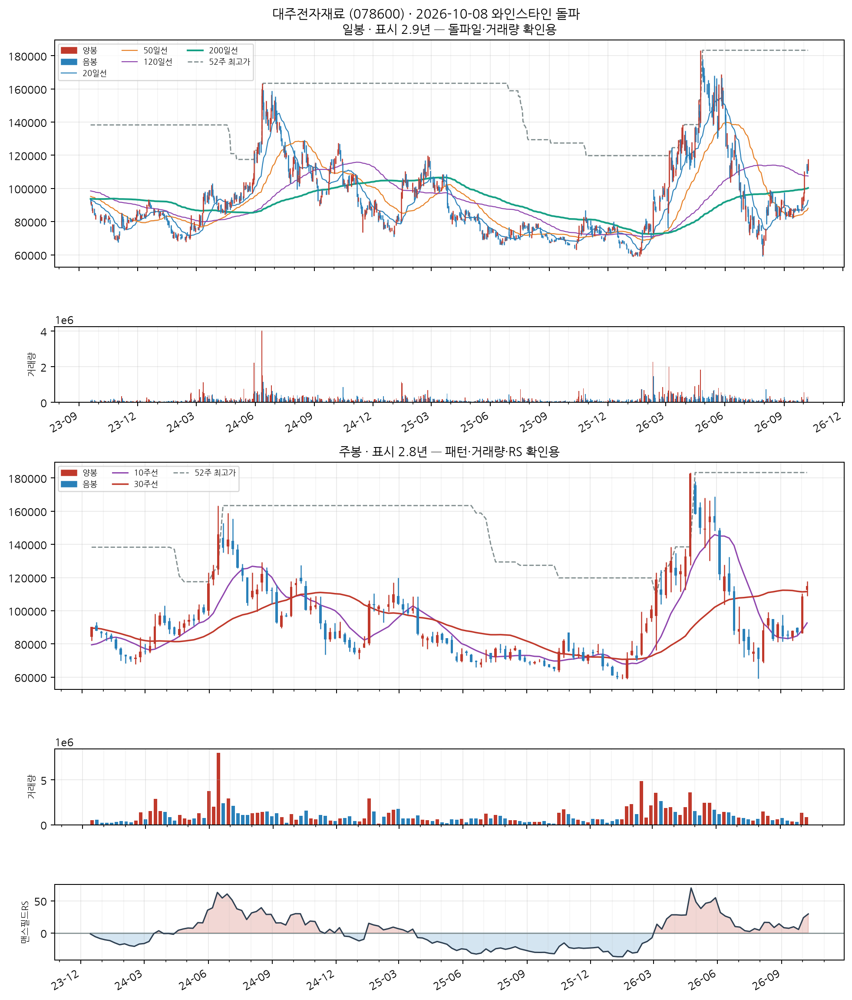
📐 차트 패턴: 약한 유사 — 역헤드앤숄더 형태 완성·미돌파 확신 낮음 판정 기준(PDF)
세 저점 구조는 있으나 넥라인(272,058)을 아직 넘지 못했다.
가장 강한 반증 넥라인 기울기: 주당 +4.7% — 구조 불안정
경쟁 후보·더 단순한 설명 없음
측정표 (주봉 종가 기준, 판정일 2026-10-08 이후 데이터 미사용)
조건별 판정
- 충족 선행 추세 — 선행 하락 -22.2% ≤ -15%
- 충족 머리 깊이 — 양 어깨 대비 최소 8.5% ≥ 3.5%
- 충족 어깨 대칭 — 어깨 높이차 8.5% ≤ 15%
- 충족 기간 — 어깨 간 42주 ≥ 6주
- 충족 시간 대칭 — 머리 좌우 기간 비 2.00
- 미충족 넥라인 기울기 — 주당 +4.7% — 구조 불안정
- 충족 오른쪽 어깨 매도 약화 — 오른쪽 어깨 부근 거래량 = 머리 부근의 0.80배
- 충족 최근성 — 마지막 구조 피벗(2026-07-31)이 9주 전
- 미충족 넥라인 돌파 — 종가가 아직 확인선 위로 안 올라옴(-60.0%)
- 판정불가 돌파 거래량 — 돌파 전
추가로 필요한 데이터 장중 고저 기준 깊이(여기 수치는 주봉 종가 기준) · 이번 주 완결 주봉(2026-10-09 라벨) — 미완결이라 판정에서 제외
패턴만으로 매수 추천이나 목표 달성 확률을 만들지 않습니다. 수치 기준은 잠정치이며 라벨 데이터로 검증되지 않았습니다.
한중엔시에스 (107640)
신규
KOSDAQ
전동기, 발전기 및 전기 변환 · 공급 · 제어 장치 제조업
업종 참고: RS 평균 53/99(업종 중 상위 41%) · 오늘 신호 1건 · 업종 평균이 코스닥 대비 +8.9%p(126일), 종목별 편차 ±21%p
🧪 자체 섹터 분류(실험적, 참고용): 일차전지 및 이차전지 제조업 (삼성SDI·상신이디피 등 21종목)
섹터 내 RS 순위: 9/21위 (RS 56/99)
섹터 1~3위: 삼성SDI(87), 상신이디피(87), LG에너지솔루션(75)
※ 자체 상관관계 계산(최근 1년) — 검증 시 기준업종 11개 중 8개 정확. 주 단위로 구성종목이 일부 바뀔 수 있음(주간 일치도 실측 0.53)
종가 47,350 · 거래대금 96억
거래량비 3.2x맨스필드RS +11.4
손절 44,036 | 목표 57,294 | 수량 211주
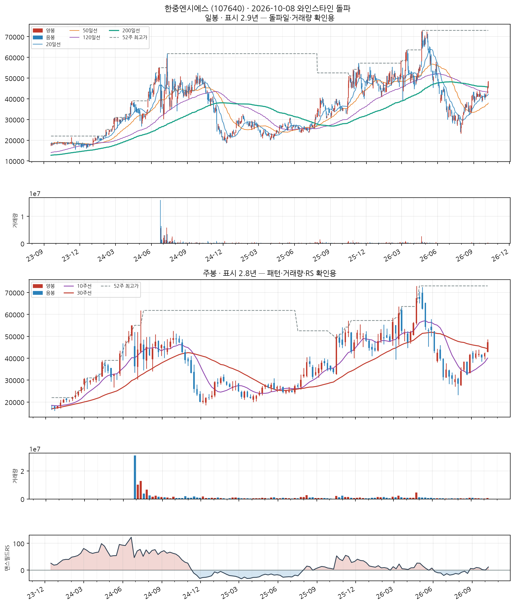
📐 차트 패턴 판정: 후보 없음 후보 없음 판정 기준(PDF)
세 패턴 모두 필수 조건을 채운 후보가 없다(가장 가까운 컵위드핸들 후보: 깊이: 컵 깊이 57.9% — 기준 12%~33%(고변동 최대 50%)를 벗어남).
가장 강한 반증 컵위드핸들: 깊이: 컵 깊이 57.9% — 기준 12%~33%(고변동 최대 50%)를 벗어남; 이중바닥: 최근성: 돌파가 23주 전(2026-04-24) — 기준 8주 이내, 이미 지난 베이스(확인선 대비 -30.1%)
경쟁 후보·더 단순한 설명 더 단순한 설명: 최근 26주 하락 추세 지속(-10.5%) — 베이스 없음
추가로 필요한 데이터 장중 고저 기준 깊이(여기 수치는 주봉 종가 기준) · 이번 주 완결 주봉(2026-10-09 라벨) — 미완결이라 판정에서 제외
패턴만으로 매수 추천이나 목표 달성 확률을 만들지 않습니다. 수치 기준은 잠정치이며 라벨 데이터로 검증되지 않았습니다.
HLB테라퓨틱스 (115450)
신규
KOSDAQ
기타 전문 도매업
업종 참고: RS 평균 60/99(업종 중 상위 17%) · 오늘 신호 2건 · 업종 평균이 코스피 대비 -17.9%p(126일), 종목별 편차 ±18%p
🧪 자체 섹터 분류(실험적, 참고용): 의료용품 및 기타 의약 관련제품 제조업 (HLB생명과학·HLB테라퓨틱스 등 5종목)
섹터 내 RS 순위: 2/5위 (RS 54/99)
섹터 1~3위: HLB생명과학(73), HLB테라퓨틱스(54), HLB이노베이션(43)
※ 자체 상관관계 계산(최근 1년) — 검증 시 기준업종 11개 중 8개 정확. 주 단위로 구성종목이 일부 바뀔 수 있음(주간 일치도 실측 0.53)
종가 3,175 · 거래대금 291억
거래량비 20.8x맨스필드RS +27.2
손절 2,953 | 목표 3,842 | 수량 3,149주
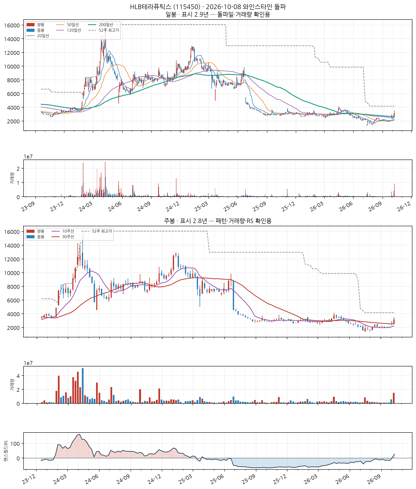
📐 차트 패턴 판정: 후보 없음 후보 없음 판정 기준(PDF)
세 패턴에 해당하는 베이스 구조가 최근 구간에 없다.
가장 강한 반증 피벗 구조 자체가 없다(뚜렷한 저점·고점 교대가 최근 26주 안에 없음).
경쟁 후보·더 단순한 설명 더 단순한 설명: 최근 26주 하락 추세 지속(-17.1%) — 베이스 없음
추가로 필요한 데이터 장중 고저 기준 깊이(여기 수치는 주봉 종가 기준) · 이번 주 완결 주봉(2026-10-09 라벨) — 미완결이라 판정에서 제외
패턴만으로 매수 추천이나 목표 달성 확률을 만들지 않습니다. 수치 기준은 잠정치이며 라벨 데이터로 검증되지 않았습니다.
BGF에코머티리얼즈 (126600)
신규
KOSDAQ
합성고무 및 플라스틱 물질 제조업
업종 참고: RS 평균 40/99(업종 중 상위 71%) · 오늘 신호 2건 · 업종 평균이 코스피 대비 -36.8%p(126일), 종목별 편차 ±20%p
🧪 자체 섹터 분류(실험적, 참고용): 피노·DI동일 등 11종목 (업종 혼재)
섹터 내 RS 순위: 7/11위 (RS 50/99)
섹터 1~3위: 피노(88), DI동일(85), 옵티코어(73)
※ 자체 상관관계 계산(최근 1년) — 검증 시 기준업종 11개 중 8개 정확. 주 단위로 구성종목이 일부 바뀔 수 있음(주간 일치도 실측 0.53)
종가 3,660 · 거래대금 49억
거래량비 56.5x맨스필드RS +14.9
손절 3,404 | 목표 4,429 | 수량 2,732주
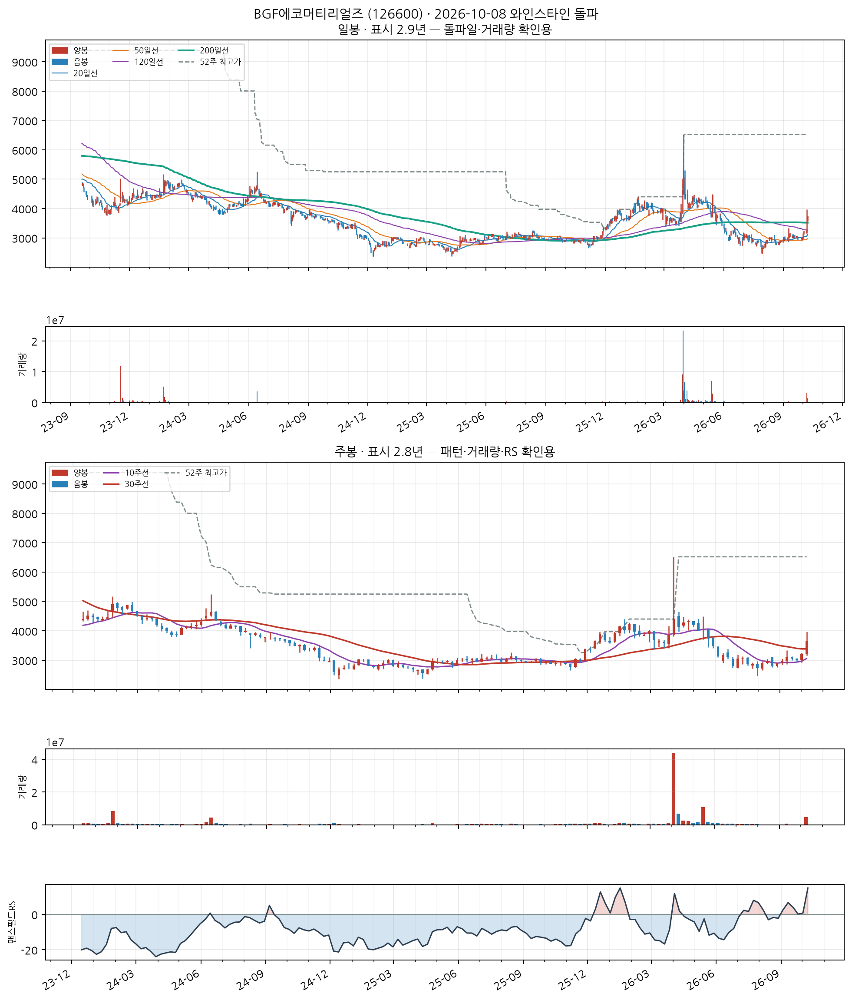
📐 차트 패턴 판정: 후보 없음 후보 없음 판정 기준(PDF)
세 패턴 모두 필수 조건을 채운 후보가 없다(가장 가까운 컵위드핸들 후보: 림 대칭: 좌우 림 차이 27.4% — 오른쪽 림이 낮음, 20% 초과).
가장 강한 반증 컵위드핸들: 림 대칭: 좌우 림 차이 27.4% — 오른쪽 림이 낮음, 20% 초과; 이중바닥: 두 저점 일치: 저점 차이 23.8% — 같은 지지대로 보기 어려움(10% 초과)
경쟁 후보·더 단순한 설명 더 단순한 설명: 최근 26주 하락 추세 지속(-27.4%) — 베이스 없음
추가로 필요한 데이터 장중 고저 기준 깊이(여기 수치는 주봉 종가 기준) · 이번 주 완결 주봉(2026-10-09 라벨) — 미완결이라 판정에서 제외
패턴만으로 매수 추천이나 목표 달성 확률을 만들지 않습니다. 수치 기준은 잠정치이며 라벨 데이터로 검증되지 않았습니다.
특수 목적용 기계 제조업
업종 참고: RS 평균 60/99(업종 중 상위 19%) · 오늘 신호 8건 · 업종 평균이 코스닥 대비 +29.3%p(126일), 종목별 편차 ±59%p
🧪 자체 섹터 분류(실험적, 참고용): 서울바이오시스·DB하이텍 등 21종목 (업종 혼재)
섹터 내 RS 순위: 5/21위 (RS 80/99)
섹터 1~3위: 서울바이오시스(97), DB하이텍(92), DB(89)
※ 자체 상관관계 계산(최근 1년) — 검증 시 기준업종 11개 중 8개 정확. 주 단위로 구성종목이 일부 바뀔 수 있음(주간 일치도 실측 0.53)
종가 15,930 · 거래대금 103억
거래량비 7.4x맨스필드RS +42.3
손절 14,815 | 목표 19,275 | 수량 627주
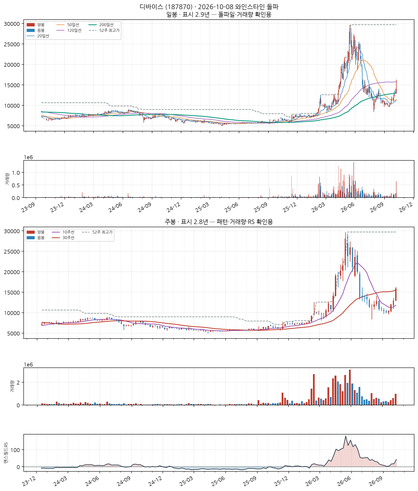
📐 차트 패턴 판정: 후보 없음 후보 없음 판정 기준(PDF)
세 패턴 모두 필수 조건을 채운 후보가 없다(가장 가까운 컵위드핸들 후보: 림 대칭: 좌우 림 차이 54.0% — 오른쪽 림이 낮음, 20% 초과).
가장 강한 반증 컵위드핸들: 림 대칭: 좌우 림 차이 54.0% — 오른쪽 림이 낮음, 20% 초과; 이중바닥: 두 저점 일치: 저점 차이 74.7% — 같은 지지대로 보기 어려움(10% 초과)
경쟁 후보·더 단순한 설명 더 단순한 설명: 최근 26주 상승 추세 지속(+19.4%) — 베이스 없음
추가로 필요한 데이터 장중 고저 기준 깊이(여기 수치는 주봉 종가 기준) · 이번 주 완결 주봉(2026-10-09 라벨) — 미완결이라 판정에서 제외
패턴만으로 매수 추천이나 목표 달성 확률을 만들지 않습니다. 수치 기준은 잠정치이며 라벨 데이터로 검증되지 않았습니다.
신흥에스이씨 (243840)
신규
KOSDAQ
일차전지 및 이차전지 제조업
업종 참고: RS 평균 55/99(업종 중 상위 35%) · 오늘 신호 2건 · 업종 평균이 코스피 대비 -11.9%p(126일), 종목별 편차 ±43%p
🧪 자체 섹터 분류(실험적, 참고용): 일차전지 및 이차전지 제조업 (삼성SDI·상신이디피 등 21종목)
섹터 내 RS 순위: 11/21위 (RS 47/99)
섹터 1~3위: 삼성SDI(87), 상신이디피(87), LG에너지솔루션(75)
※ 자체 상관관계 계산(최근 1년) — 검증 시 기준업종 11개 중 8개 정확. 주 단위로 구성종목이 일부 바뀔 수 있음(주간 일치도 실측 0.53)
종가 6,520 · 거래대금 63억
거래량비 7.2x맨스필드RS +16.8
손절 6,064 | 목표 7,889 | 수량 1,533주
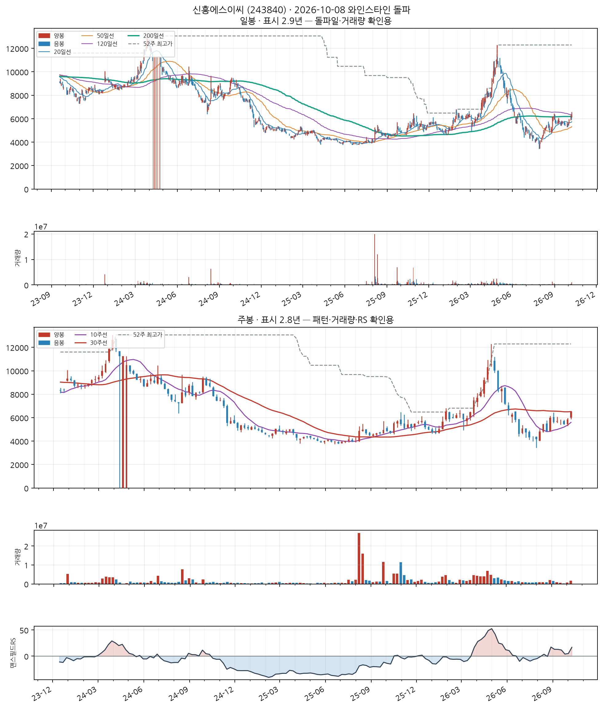
📐 차트 패턴: 약한 유사 — 이중바닥 형태 완성·미돌파 확신 낮음 판정 기준(PDF)
W 형태는 있으나 중간 고점 10,550를 아직 넘지 못했다.
가장 강한 반증 깊이: 베이스 깊이 59.4% — 50% 초과
경쟁 후보·더 단순한 설명 더 단순한 설명: 중간 반등 조건이 약해 단순 횡보·박스로 볼 여지가 있다(중간 반등 177.6% — 30%를 넘어 W가 아니라 독립된 두 파동일 수 있음)
측정표 (주봉 종가 기준, 판정일 2026-10-08 이후 데이터 미사용)
조건별 판정
- 충족 선행 추세 — 선행 하락 -25.9% ≤ -15%
- 부분충족 두 저점 일치 — 저점 차이 8.7% — 6% 초과
- 부분충족 중간 반등 — 중간 반등 177.6% — 30%를 넘어 W가 아니라 독립된 두 파동일 수 있음
- 충족 기간 — 베이스 105주 ≥ 7주
- 미충족 깊이 — 베이스 깊이 59.4% — 50% 초과
- 부분충족 저점2 매도 약화 — 저점2 부근 거래량 = 저점1 부근의 1.42배
- 충족 최근성 — 마지막 구조 피벗(2026-07-31)이 9주 전
- 미충족 넥라인 돌파 — 종가가 아직 확인선 위로 안 올라옴(-44.7%)
- 판정불가 돌파 거래량 — 돌파 전
추가로 필요한 데이터 장중 고저 기준 깊이(여기 수치는 주봉 종가 기준) · 이번 주 완결 주봉(2026-10-09 라벨) — 미완결이라 판정에서 제외
패턴만으로 매수 추천이나 목표 달성 확률을 만들지 않습니다. 수치 기준은 잠정치이며 라벨 데이터로 검증되지 않았습니다.
동·식물성 유지 및 낙농제품 제조업
업종 참고: RS 평균 66/99(업종 중 상위 6%) · 오늘 신호 1건 · 업종 평균이 코스피 대비 -12.2%p(126일), 종목별 편차 ±16%p
🧪 자체 섹터 분류(실험적, 참고용): 디지털대성·아이마켓코리아 등 19종목 (업종 혼재)
섹터 내 RS 순위: 8/19위 (RS 69/99)
섹터 1~3위: 디지털대성(84), 아이마켓코리아(82), 한국기업평가(75)
※ 자체 상관관계 계산(최근 1년) — 검증 시 기준업종 11개 중 8개 정확. 주 단위로 구성종목이 일부 바뀔 수 있음(주간 일치도 실측 0.53)
종가 34,600 · 거래대금 1.5억
거래량비 10.8x맨스필드RS +5.3
손절 32,178 | 목표 41,866 | 수량 289주
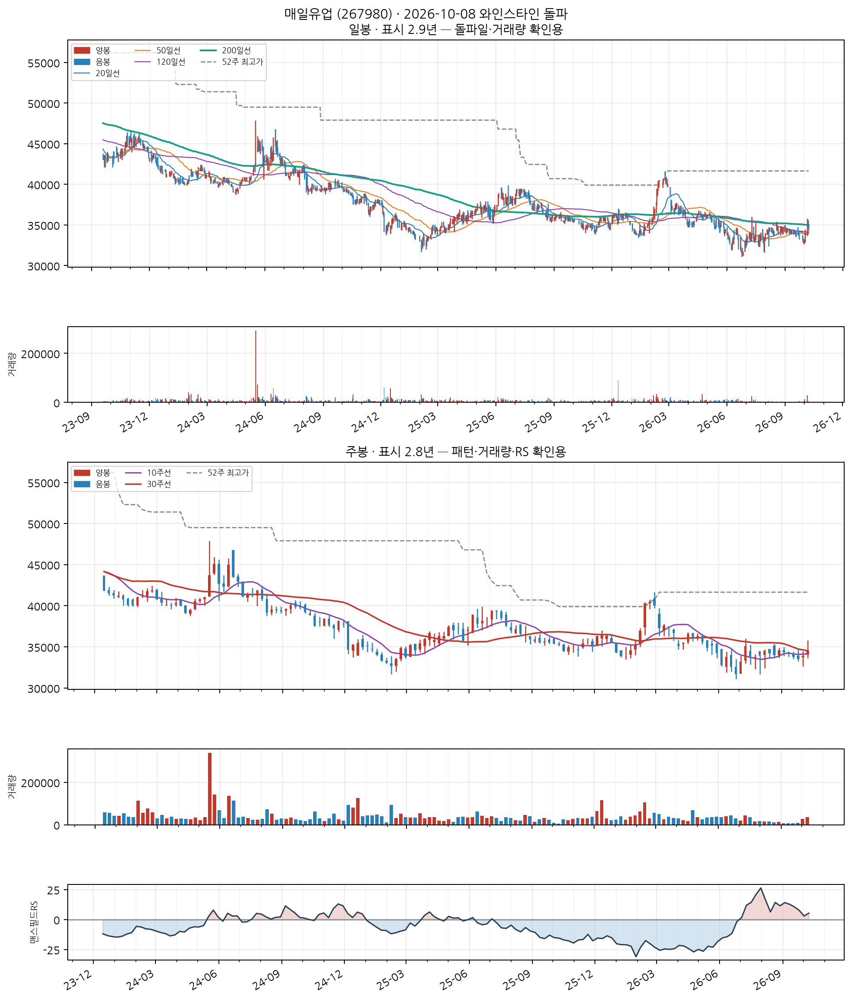
📐 차트 패턴 판정: 후보 없음 후보 없음 판정 기준(PDF)
세 패턴 모두 필수 조건을 채운 후보가 없다(가장 가까운 이중바닥 후보: 최근성: 마지막 구조 피벗(2026-04-03)이 26주 전 — 기준 12주 이내, 지금 베이스가 아니다).
가장 강한 반증 이중바닥: 최근성: 마지막 구조 피벗(2026-04-03)이 26주 전 — 기준 12주 이내, 지금 베이스가 아니다; 컵위드핸들: U자 모양: 바닥 형태(3주 중앙값 평활): 직선 V 템플릿 오차 0.142 vs 포물선 U 템플릿 오차 0.215 → 치우침 -0.072 (V=−0.167·U=+0.167, 기각 ≤-0.05·충족 ≥+0.05) · 바닥 중심 위치 75% — 바닥에서 완만해지는 구간 없이 한 점에서 꺾이는 V자; 역헤드앤숄더: 머리 깊이: 머리가 어깨보다 1.7%만 깊음 — 세 저점이 사실상 같은 높이(삼중바닥·박스)
경쟁 후보·더 단순한 설명 더 단순한 설명: 최근 26주 박스권 횡보(등락폭 15.6%)
추가로 필요한 데이터 장중 고저 기준 깊이(여기 수치는 주봉 종가 기준) · 이번 주 완결 주봉(2026-10-09 라벨) — 미완결이라 판정에서 제외
패턴만으로 매수 추천이나 목표 달성 확률을 만들지 않습니다. 수치 기준은 잠정치이며 라벨 데이터로 검증되지 않았습니다.
1차 비철금속 제조업
업종 참고: RS 평균 44/99(업종 중 상위 67%) · 오늘 신호 1건 · 업종 평균이 코스피 대비 -10.2%p(126일), 종목별 편차 ±60%p
🧪 자체 섹터 분류(실험적, 참고용): 전자부품 제조업 (드림텍·PS일렉트로닉스 등 17종목)
섹터 내 RS 순위: 15/17위 (RS 17/99)
섹터 1~3위: 드림텍(91), PS일렉트로닉스(88), 뷰웍스(81)
※ 자체 상관관계 계산(최근 1년) — 검증 시 기준업종 11개 중 8개 정확. 주 단위로 구성종목이 일부 바뀔 수 있음(주간 일치도 실측 0.53)
종가 56,000 · 거래대금 215억
거래량비 3.2x맨스필드RS +40.4
손절 52,080 | 목표 67,760 | 수량 178주
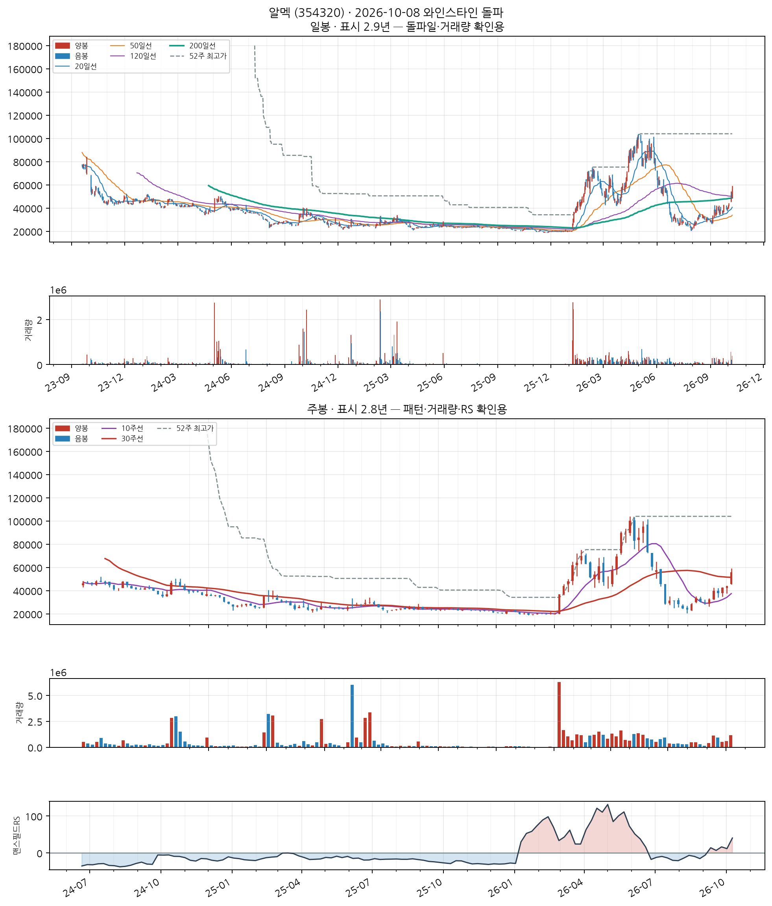
📐 차트 패턴 판정: 후보 없음 후보 없음 판정 기준(PDF)
세 패턴 모두 필수 조건을 채운 후보가 없다(가장 가까운 컵위드핸들 후보: 림 대칭: 좌우 림 차이 56.4% — 오른쪽 림이 낮음, 20% 초과).
가장 강한 반증 컵위드핸들: 림 대칭: 좌우 림 차이 56.4% — 오른쪽 림이 낮음, 20% 초과; 이중바닥: 두 저점 일치: 저점 차이 43.9% — 같은 지지대로 보기 어려움(10% 초과)
경쟁 후보·더 단순한 설명 더 단순한 설명: 최근 26주 하락 추세 지속(-24.0%) — 베이스 없음
추가로 필요한 데이터 장중 고저 기준 깊이(여기 수치는 주봉 종가 기준) · 이번 주 완결 주봉(2026-10-09 라벨) — 미완결이라 판정에서 제외
패턴만으로 매수 추천이나 목표 달성 확률을 만들지 않습니다. 수치 기준은 잠정치이며 라벨 데이터로 검증되지 않았습니다.
기타 화학제품 제조업
업종 참고: RS 평균 62/99(업종 중 상위 12%) · 오늘 신호 2건 · 업종 평균이 코스피 대비 -12.4%p(126일), 종목별 편차 ±26%p
🧪 자체 섹터 분류(실험적, 참고용): 피델릭스·주성엔지니어링 등 29종목 (업종 혼재)
섹터 내 RS 순위: 24/29위 (RS 56/99)
섹터 1~3위: 피델릭스(99), 주성엔지니어링(99), 인텍플러스(98)
※ 자체 상관관계 계산(최근 1년) — 검증 시 기준업종 11개 중 8개 정확. 주 단위로 구성종목이 일부 바뀔 수 있음(주간 일치도 실측 0.53)
종가 15,880 · 거래대금 55억
거래량비 2.1x맨스필드RS +17.4
손절 14,768 | 목표 19,215 | 수량 629주
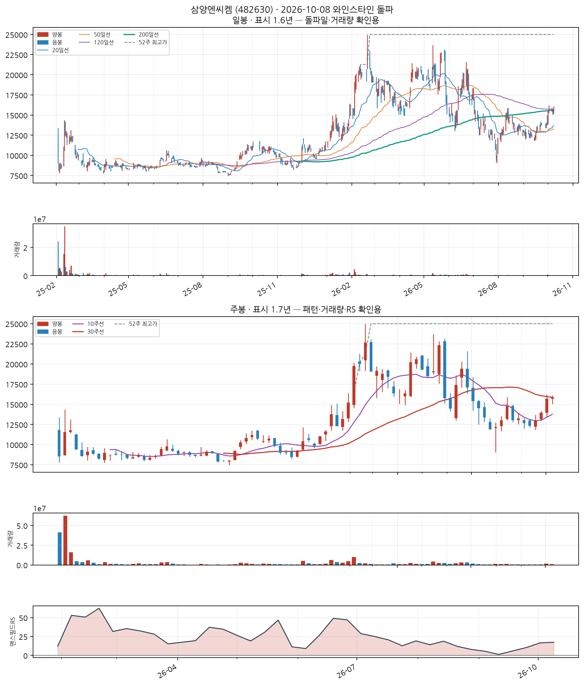
📐 차트 패턴: 약한 유사 — 이중바닥 돌파 확인 확신 낮음 판정 기준(PDF)
두 저점(11,880/12,320) 뒤 중간 고점 14,800를 종가로 넘었다.
가장 강한 반증 선행 추세: 선행 추세가 상승(+164.2%) — 상승 중 눌림일 수 있어 반전형 전제가 없다
경쟁 후보·더 단순한 설명 더 단순한 설명: 선행 하락이 없어 반전형이 아니라 상승 추세 중 눌림(조정)일 수 있다
측정표 (주봉 종가 기준, 판정일 2026-10-08 이후 데이터 미사용)
조건별 판정
- 미충족 선행 추세 — 선행 추세가 상승(+164.2%) — 상승 중 눌림일 수 있어 반전형 전제가 없다
- 충족 두 저점 일치 — 저점 차이 3.6% ≤ 6%
- 충족 중간 반등 — 중간 반등 24.6% ≥ 8%
- 충족 기간 — 베이스 19주 ≥ 7주
- 부분충족 깊이 — 베이스 깊이 46.8% — 40% 초과
- 충족 저점2 매도 약화 — 저점2 부근 거래량 = 저점1 부근의 0.53배
- 충족 최근성 — 돌파 주(2026-10-02)가 0주 전
- 충족 넥라인 돌파 — 2026-10-02 주 종가 15,680 > 확인선
- 충족 돌파 거래량 — 돌파 주 거래량 = 직전 10주 평균의 2.54배
추가로 필요한 데이터 장중 고저 기준 깊이(여기 수치는 주봉 종가 기준) · 이번 주 완결 주봉(2026-10-09 라벨) — 미완결이라 판정에서 제외
패턴만으로 매수 추천이나 목표 달성 확률을 만들지 않습니다. 수치 기준은 잠정치이며 라벨 데이터로 검증되지 않았습니다.